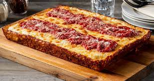

Detroit Style Pizza

A Detroit Style Pizza comes from the traditional Sicilian Style Pizza. It has a thick
crust with lots of toppings. What makes a Detroit Style a Detroit Style is the fluffiness
of the crust, the burnt cheese edges, and many would say the use of Brick Cheese. However,
Brick Cheese is hard to find so I tend to use cheddar, jack, and mozz.
Ingredients
- 450 grams of Bread Flour
- 14 grams of salt
- 315 grams of water
- 70 grams of sourdough stater
- 9 grams of olive oil
- Pepperjack cheese
- Mozzerella cheese
- Sliced pepperoni
- Store bought pizza sauce
Steps
- Pour 450 grams of bread flour into a large bowl.
- Mix in the 14 grams of salt.
- In a separate bowl, pour in 315 grams of water.
- Mix in the 70 grams of sourdough starter and the 9 grams of olive oil.
- combine the water, starter, and oil with the flour and salt.
- Stir these ingredients slowly until a very rough ball forms.
- Allow dough to rest, covered in plastic wrap, for about 20 minutes.
- Fold and slap the dough about 5 times and then let rest again for about 20 minutes.
- Perform steps 7-8 until the dough is smooth.
- Put dough in 9 x 13 cooking pan and let rest in room temperature for up to 8 hours.